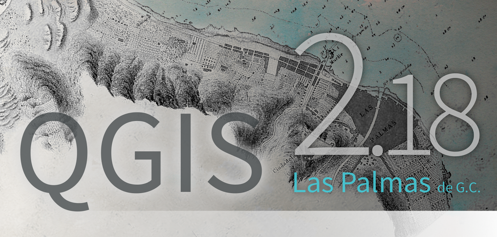
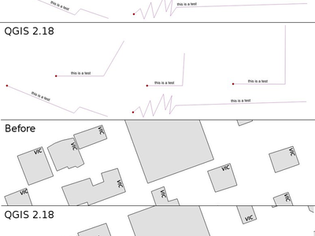
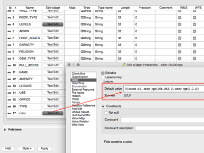
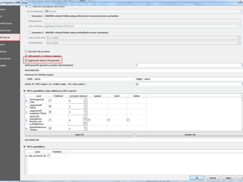

Modifications apportées par QGIS 2.18¶

Il s’agit de la dernière version de la série 2.x. La version long terme (LTR) courante reste la version 2.14.x. La version 2.18.x apporte des améliorations graduelles par rapport à la version précédente. Le plus gros de nos efforts est maintenant focalisé sur le développement de la version 3.0 de QGIS qui est notre version nouvelle génération dont la distribution est prévue pour la fin du premier trimestre 2017.
Remerciements
We would like to thank the developers, documenters, testers and all the many folks out there who volunteer their time and effort (or fund people to do so). From the QGIS community we hope you enjoy this release! If you wish to donate time, money or otherwise get involved in making QGIS more awesome, please wander along to qgis.org and lend a hand!
QGIS is supported by donors and sponsors. A current list of donors who have made financial contributions large and small to the project can be seen on our donors list. If you would like to become and official project sponsor, please visit our sponsorship page for details. Sponsoring QGIS helps us to fund our six monthly developer meetings, maintain project infrastructure and fund bug fixing efforts. A complete list of current sponsors is provided below - our very great thank you to all of our sponsors!
QGIS est un logiciel libre et vous n’avez aucune obligation de payer quoi que ce soit pour l’utiliser. En fait, nous souhaitons encourager les gens à l’utiliser le plus possible, sans s’intéresser à leur état financier ou à leur statut social. Nous croyons que fournir aux gens des outils décisionnels spatiaux permettra d’améliorer la société.
- Sponsors de QGIS 2.18.0
- Général
- Style
- Étiquetage
- Rendu
- Gestion des Données
- Formes et widgets
- Composeur de cartes
- Traitements
- Fonctionnalité : Algorithme de point sur une surface
- Fonctionnalité : L’algorithme de dissolution accepte des champs multiples
- Fonctionnalité : Algorithme optimisé pour le découpage
- Fonctionnalité : Algorithme de cadres limites
- Fonctionnalité : Algorithme pour combiner des lignes connectées
- Fonctionnalité : Algorithme de limite de géométrie
- Fournisseurs de données
- QGIS Server
- Extensions
- Programmation
- Fonctionnalité : Nouvelles classes PyQGIS en 2.18
- Fonctionnalité: Nouvelles fonctions dans le générateur d’expressions
Sponsors de QGIS 2.18.0¶
Chaque année, nous recevons aussi le soutien de diverses organisations qui apprécient le travail que nous faisons et souhaiteraient faciliter l’effort de développement soutenu du projet. Ces sponsors sont listés ci-dessous avec nos remerciements !
  QGIS Usergroup Switzerland, Suisse QGIS Usergroup Switzerland, Suisse |
  State of Vorarlberg, Autriche State of Vorarlberg, Autriche |
 Bureau des travaux publics, Irlande, Irlande Bureau des travaux publics, Irlande, Irlande |
 GAIA mbh, Allemagne GAIA mbh, Allemagne |
 Sourcepole AG, Suisse Sourcepole AG, Suisse |
 QGIS user group Germany, Allemagne QGIS user group Germany, Allemagne |
|
|
|
|
|
|
|
|
|
|
|
|
|
|
|
|
|
SOLTIG (Soluciones en Tecnologías de Información Geográfica) |
|
|
|
|
|
|
|
|
|
|
|
|


Général¶
Fonctionnalité : Liens automatiques pour l’identification des résultats¶
Tout lien http ou mailto dans des valeurs d’attribut sera automatiquement converti en lien cliquable dans le panneau d’identification des résultats.

Cette fonctionnalité a été développée par Sandro Mani (Sourcepole)
Fonctionnalité : Roulette souris sur les curseurs de la boîte de dialogue des couleurs¶
Avec QGIS 2.18 vous pouvez maintenant utiliser la roulette souris au-dessus des curseurs de la boîte de dialogue de la sélection des couleurs pour faire varier la valeur par de petits incréments. C’est un raccourci utile pour de petits ajustements dans les couleurs.

Cette fonctionnalité a été financée par Nyall Dawson (North Road)
Cette fonctionnalité a été développée par Nyall Dawson (North Road)
Fonctionnalité : Ajout de jeux personnalisés de couleurs au menu déroulant du bouton des couleurs¶
QGIS 2.18 ajoute la possibilité pour les utilisateurs d’établir si un jeu personnalisé de couleurs est disponible dans le menu déroulant des boutons des couleurs. Ce réglage est contrôlé avec la boîte de dialogue du sélecteur de couleur, dans l’onglet des listes. Ajoutez simplement un nouveau jeu de couleur, puis dans le menu de jeu cochez l’option « Afficher dans les boutons ». C’est un raccourci utile si vous avez des jeux de palettes courantes et que vous voulez qu’ils soient immédiatement disponibles par le menu couleur.

Cette fonctionnalité a été financée par North Road
Cette fonctionnalité a été développée par Nyall Dawson (North Road)
Style¶
Fonctionnalité : Le sélecteur de couleur est maintenant contenu dans le panneau de style de couche¶
Avec QGIS 2.18 cliquer un bouton de couleur dans le panneau de style de couche affiche la boîte de dialogue du sélecteur de couleur dans le panneau de style lui-même au lieu d’une boîte de dialogue séparée. Ceci permet de modifier interactivement les couleurs avec pré-visualisation immédiate des résultats.

Cette fonctionnalité a été financée par North Road
Cette fonctionnalité a été développée par Nyall Dawson (North Road)
Étiquetage¶
Fonctionnalité : Support pour liste de substitution pour l’étiquetage¶
Ajoute la possibilité de fournir une liste de substitution à effectuer dans les étiquettes de textes. Par ex. abréger les types de rues.
L’utilisateur peut exporter et importer des listes de substitution pour en faciliter leur réutilisation et leur partage.

Cette fonctionnalité a été financée par North Road
Cette fonctionnalité a été développée par Nyall Dawson (North Road)
Fonctionnalité : Amélioration de l’algorithme de placement des étiquettes de ligne¶
Le mode d’étiquetage parallèle pour les couche de lignes a été grandement amélioré, avec un tout nouveau algorithme qui évite de placer les étiquettes sur les parties dentelées des géométries.

Cette fonctionnalité a été financée par Andreas Neumann.
Cette fonctionnalité a été développée par Nyall Dawson (North Road)
Fonctionnalité : Étiquetage des polygones avec des étiquettes courbées le long du périmètre¶
Un nouveau mode d’étiquetage des polygones est ajouté dans lequel le périmètre du polygone est étiqueté avec des étiquettes courbées.

Cette fonctionnalité a été financée par North Road
Cette fonctionnalité a été développée par Nyall Dawson (North Road)
Rendu¶
Fonctionnalité : Pré-visualisation des tuiles raster (couches WMTS et XYZ)¶
Dans les versions précédentes de QGIS, l’utilisateur devait attendre la fin du téléchargement de toutes les tuiles d’une couche pour pouvoir la visualiser. Ce n’est plus le cas maintenant, chaque tuile est affichée dès qu’elle est téléchargée, améliorant ainsi l’expérience utilisateur en diminuant significativement le temps d’attente avant affichage. De plus, les tuiles téléchargées précédemment, en plus haute ou plus faible résolution, peuvent être utilisées pour la pré-visualisation dans les zones où les tuiles ayant la bonne résolution n’ont pas encore été téléchargées.

Cette fonctionnalité a été financée par Land Information New Zealand
Cette fonctionnalité a été développée par Martin Dobias (Lutra Consulting)
Fonctionnalité : Le rendu des rasters peut être arrêté (couches WMS, WMTS, WCS et XYZ)¶
Cette amélioration augmente l’expérience utilisateur lors d’un travail sur des couches rasters provenant de serveurs à distance. Précédemment il fallait attendre la fin du téléchargement pour pouvoir zoomer ou déplacer la carte, car l’interface utilisateur était gelée en attendant. Ce n’est plus le cas maintenant car le rendu des couches rasters peut être arrêté à tout moment.
Cette fonctionnalité a été financée par Land Information New Zealand
Cette fonctionnalité a été développée par Martin Dobias (Lutra Consulting)
Gestion des Données¶
Fonctionnalité : Ajout d’un drapeau pour ne copier que les entités sélectionnées¶
L’extension d’édition hors-ligne est une extension de base, livrée avec QGIS et qui vous permet de modifier des jeux de données distants (ex: depuis une base de données) lorsque vous êtes hors-ligne, sur le terrain et de resynchroniser cette saisie lorsque vous êtes de retour au bureau. Cette amélioration permet d’améliorer les possibilités d’édition en mode hors-ligne pour travailler uniquement sur un sous-ensemble de couches volumineuses.

Cette fonctionnalité a été financée par DB Fahrwegdienste GmbH
Cette fonctionnalité a été développée par Matthias Kuhn (OPENGIS.ch)
Formes et widgets¶
Fonctionnalité : Permet le contrôle des étiquettes pour les widgets individuels d’édition¶
Permet de contrôler les étiquettes des contrôles de formulaire d’édition. Dans le mode de conception par glisser/déposer, un double clic sur une entrée permet de contrôler si l’étiquette doit être affichée individuellement par entrée de formulaire.
De plus, il est possible de configurer si les boutons lier/délier sont affichés pour le contrôle de référence de relation, ce qui est pratique pour masquer les relations 1:n où les enfants ne peuvent exister sans parents.

Cette fonctionnalité a été financée par Kanton Zug, GIS-Fachstelle
Cette fonctionnalité a été développée par Matthias Kuhn (OPENGIS.ch)
Fonctionnalité: Visibilité conditionnelle des onglets et des boîtes de groupe¶
Cette fonctionnalité ajoute une nouvelle option de configuration pour afficher ou masquer les onglets ou les boîtes de groupe des formulaires en mode de conception par glisser/déposer de manière conditionnelle.
La configuration est accessible via un double clic dans l’arbre de conception dans l’interface de configuration des champs.
Une expression peut être saisie pour contrôler la visibilité. L’expression sera ré-évaluée chaque fois que les valeurs du formulaire sont modifiées et l’onglet ou la boîte de groupe sera affiché/masqué de manière appropriée.

Cette fonctionnalité a été développée par Matthias Kuhn (OPENGIS.ch)
Fonctionnalité: Valeur de champ par défaut du côté client¶
Cette fonctionnalité permet de paramétrer une expression qui sera utilisée pour définir une valeur par défaut pour un champ de couche vecteur. Les expressions de valeur par défaut peuvent utiliser les propriétés de l’entité existantes au moment de l’appel, comme les géométries modifiées. Les variables d’expression peuvent également être utilisées, facilitant la saisie d’un nom d’utilisateur, de la date courante, du chemin d’un projet, etc.

Cette fonctionnalité a été financée par DB Fahrwegdienste GmbH
Cette fonctionnalité a été développée par Nyall Dawson (North Road)
Composeur de cartes¶
Fonctionnalité : Vraies flèches du Nord¶
QGIS 2.18 ajoute, dans le Composeur, la possibilité d’orienter les flèches du Nord sur le Vrai Nord. Précédemment toutes les flèches étaient alignées sur le nord grille, ce qui n’est pas acceptable pour les régions polaires ou des projections dont le Nord n’est pas vers le haut (tels que certains systèmes de projection sud-africains). Il est maintenant possible d’orienter les flèches soit ver le nord grille soit vers le Vrai Nord. Il y a aussi un angle de décalage optionnel permettant de spécifier une convergence de grille pour que les flèches s’alignent sur le Nord magnétique !

Cette fonctionnalité a été financée par Norwegian Polar Institute’s Quantarctica project
Cette fonctionnalité a été développée par Nyall Dawson (North Road)
Traitements¶
Fonctionnalité : Algorithme de point sur une surface¶
Ce nouvel algorithme est similaire à l’algorithme de centroïde, mais alors qu’un centroïde peut être localisé en dehors de son entité, l’algorithme “Point sur surface” garantie que le point créé se trouve à l’intérieur de l’entité polygonale correspondante (ou touchant l’entité de ligne correspondante pour les couches de lignes).

Cette fonctionnalité a été financée par North Road
Cette fonctionnalité a été développée par Nyall Dawson (North Road)
Fonctionnalité : L’algorithme de dissolution accepte des champs multiples¶
L’algorithme de dissolution permet maintenant une dissolution basée sur plus d’une valeur de champ. Dans les versions précédentes de QGIS une dissolution ne pouvait grouper des entités que par une seule valeur de champ.

Cette fonctionnalité a été financée par North Road
Cette fonctionnalité a été développée par Nyall Dawson (North Road)
Fonctionnalité : Algorithme optimisé pour le découpage¶
L’algorithme de découpage a été optimisé pour les scénarios courants, conduisant à une amélioration dramatique des opérations de découpage. Par exemple :
Découpage d’une couche de routes ayant 1 million de lignes par 2 polygones
Découpage d’une couche de points de 5 millions d’adresses par 2 polygones

Cette fonctionnalité a été financée par North Road
Cette fonctionnalité a été développée par Nyall Dawson (North Road)
Fonctionnalité : Algorithme de cadres limites¶
Ce nouvel algorithme calcule le cadre limite (enveloppe) de chaque entité de la couche en entrée.

Cette fonctionnalité a été financée par North Road
Cette fonctionnalité a été développée par Nyall Dawson (North Road)
Fonctionnalité : Algorithme pour combiner des lignes connectées¶
Cet algorithme joins toutes les parties connectées des géométries de chaîne multi-lignes, MultiLineString, en géométries de chaîne de lignes, LineString. Si des parties de la chaîne multi-lignes en entrée ne sont pas connectées, la géométrie en sortie sera une chaîne multi-lignes dans laquelle les parties pouvant être connectées seront combinées et contenant aussi les parties non-connectées.

Cette fonctionnalité a été financée par North Road
Cette fonctionnalité a été développée par Nyall Dawson (North Road)
Fonctionnalité : Algorithme de limite de géométrie¶
Ce nouvel algorithme renvoie la limite combinatoire des géométries en entrée (c’est -à-dire l’enveloppe topologique de la géométrie). Par exemple, une géométrie de polygone aura une enveloppe constituée par les linéaires multi-segments de chaque anneau du polygone; une géométrie linéaire aura une enveloppe constituée des points de départ et d’arrivée de la ligne. Cet algorithme est valide uniquement pour les couches de polygones ou de lignes.

Cette fonctionnalité a été financée par North Road
Cette fonctionnalité a été développée par Nyall Dawson (North Road)
Fournisseurs de données¶
Fonctionnalité : Support natif des couches de tuiles XYZ¶
Les tuiles raster au format XYZ sont maintenant supportées nativement avec les fournisseurs de données WMS, permettant d’afficher des cartes de base provenant d’autres sources sans ne plus avoir à recourir à des extensions telles que QuickMapServices ou OpenLayers.
Pour se connecter aux couches XYZ, ouvrez simplement le widget du navigateur, cherchez l’élément nommé « Serveur Tuiles (XYZ) » et cliquer le avec le bouton droit pour afficher le menu contextuel ayant l’action « Nouvelle connexion ». Une URL sera alors demandée, dans laquelle les {x}, {y}, {z} seront remplacés par les bons numéros de tuile en fonction de la vue actuelle sur la carte. Par exemple, pour ajouter une carte de base OpenStreetMap, on peut utiliser cette URL : http://c.tile.openstreetmap.org/{z}/{x}/{y}.png
Le fournisseur de données supporte aussi l’encodage des numéros de tuile XYZ en « quadkeys » utilisés par Bing. Utiliser simplement {q} au lieu de {x}, {y} et {z} dans l’URL.

Cette fonctionnalité a été financée par Lutra Consulting
Cette fonctionnalité a été développée par Martin Dobias (Lutra Consulting)
QGIS Server¶
Fonctionnalité : Possibilité de segmenter les informations de géométrie d’une entité sur le serveur¶
Nécessaire pour des géométries qui contiennent des courbes (ArcCirculaire, CourbeComposée, PolygoneCourbé), mais le client web (par ex. le Client Web QGIS) ne peut pas afficher ces types de géométries.
Cette fonctionnalité est activée dans l’onglet « serveur OWS » de la boîte de dialogue « Propriétés du projet ».

Cette fonctionnalité a été financée par Andreas Neumann.
Cette fonctionnalité a été développée par Marco Hugentobler (Sourcepole)
Extensions¶
Fonctionnalité : Gestionnaire de BD : Ajout de la possibilité de mettre à jour une couche SQL¶
Avec cette fonctionnalité il est possible de mettre à jour la source des données de la couche si elle est basée sur une requête SQL.
Cette fonctionnalité a été financée par l”Ifremer
Cette fonctionnalité a été développée par 3Liz
Programmation¶
Fonctionnalité : Expose la fonction de référencement linéaire de GEOS pour QgsGeometry¶
Une nouvelle fonction QgsGeometry::lineLocatePoint() a été ajoutée pour récupérer la distance le long d’une ligne de la plus proche position sur la ligne jusqu’à un point donné.
Cette fonctionnalité a été financée par North Road
Cette fonctionnalité a été développée par Nyall Dawson (North Road)
Fonctionnalité : Nouvelles classes PyQGIS en 2.18¶
Nouvelles classes de base¶
- QgsAnnotation - an interface for annotation items which are drawn over a map
- QgsFeedback - a base class for feedback objects to be used for cancellation of something running in a worker thread
- QgsOptionalExpression - an expression with an additional enabled flag
Nouvelles classes de l’IG, widgets réutilisables¶
- QgsExpressionLineEdit - includes a line edit for entering expressions together with a button to open the expression creation dialog. This widget is designed for use in contexts where no layer fields are available for use in an expression and space is constrained.
- QgsTabWidget - similar to QTabWidget but with additional methods to temporarily hide/show tabs
Fonctionnalité: Nouvelles fonctions dans le générateur d’expressions¶
QGIS 2.18 ajoute plusieurs nouvelles fonctions dans le générateur d’expressions, y compris des fonctions pour l’interpolation d’angles/distances.
line_merge: combine une géométrie de chaîne multi-lignes, MultiLineString, en chaînes de lignes connectées, LineStrings.boundary: renvoie la bordure de la topologie d’une géométrie, par ex. pour un polygone c’est une chaîne multi-lignes, MultiLineString, représentant les contours de celui-ci.angle_at_vertex: renvoie l’angle moyen (division en deux) vers une géométrie au sommet spécifié.distance_to_vertex: renvoie la distance le long de la géométrie par rapport à un sommet spécifié.line_interpolate_angle: calcule l’angle parallèle à une géométrie à une distance spécifique le long d’une géométrie.line_interpolate_point: renvoie un point situé sur la ligne à une distance donnée.line_locate_point: renvoie la distance le long de la ligne à l’emplacement de ligne le plus proche, la plus proche d’un point spécifique.
Cette fonctionnalité a été financée par Andreas Neumann.
Cette fonctionnalité a été développée par Nyall Dawson (North Road)